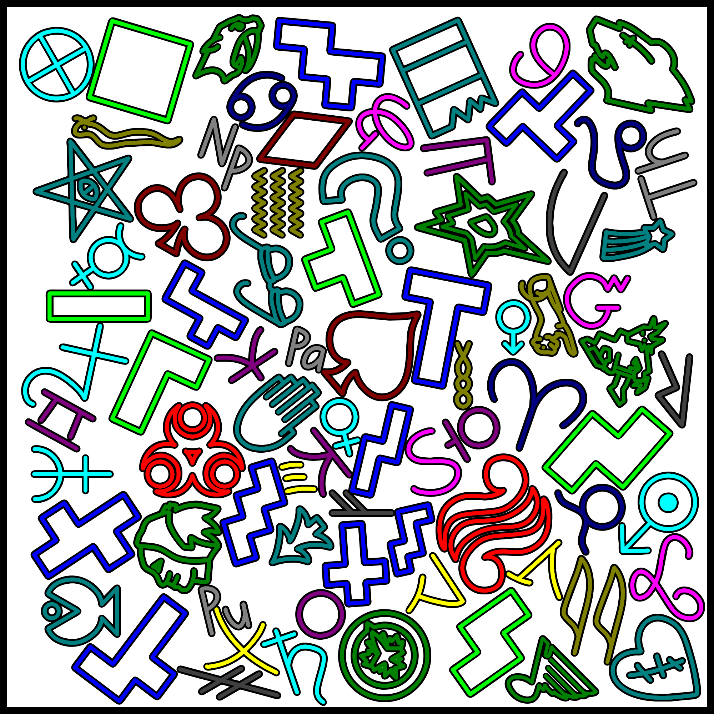
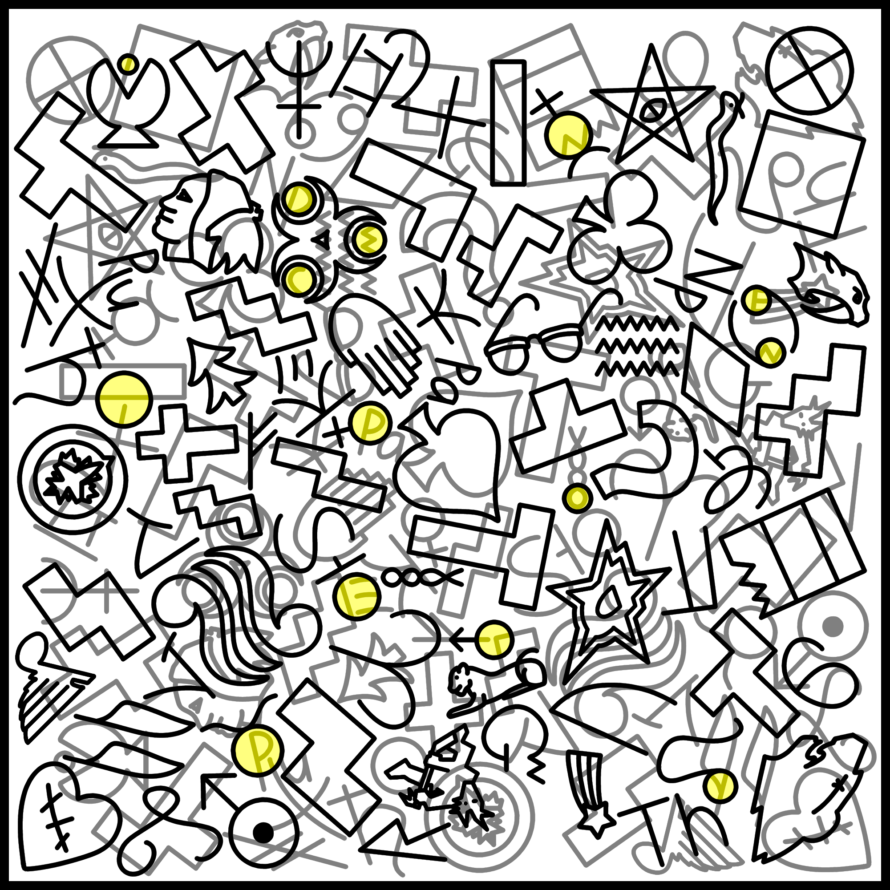
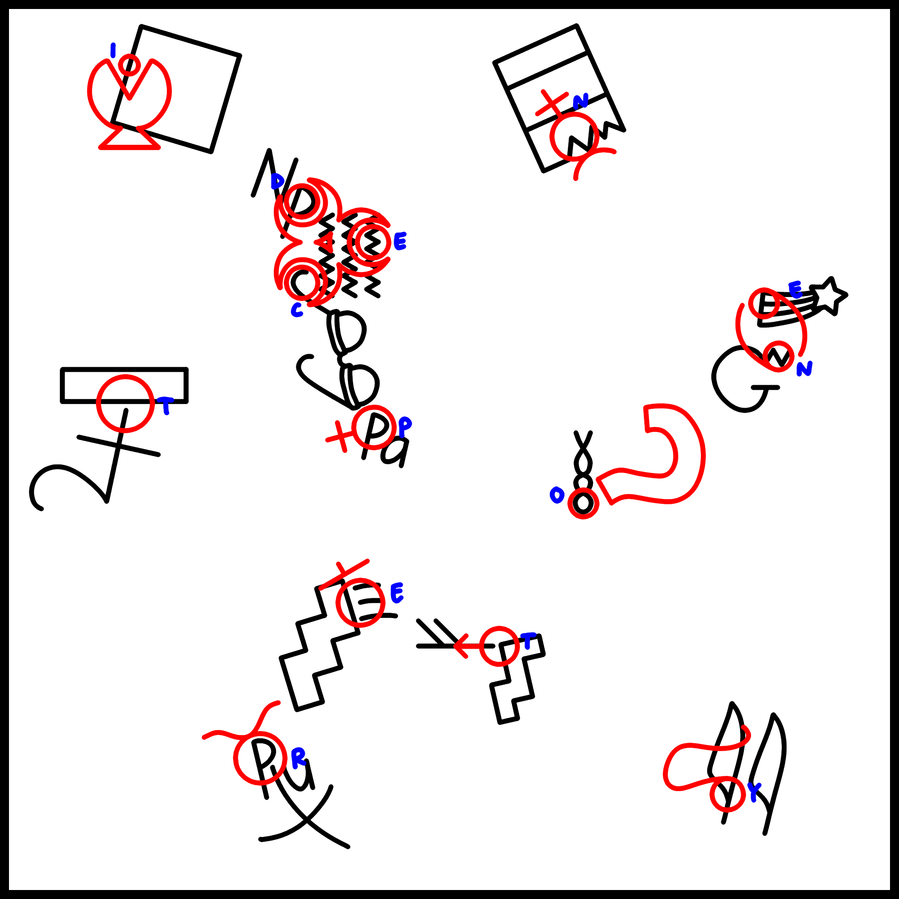

Solution: Garden Cleanup
Answer: INDECENT POETRY
Written by chuttiekang and quatrevingtneuf
Solvers are presented with a large image containing a variety of symbols. Some symbols can be identified with a descriptive web search; for others, a specialized search tool such as Shapecatcher may be useful. After identifying a few of them, it should become apparent that the symbols fall into several "sets", and that the number of elements in each set is unique. Moreover, each set is missing one member. Note that for some of the ordered sets, instead of including every member, a string of consecutive members is given, with a gap. These are summarized in the table below, and coloured in the image underneath.
| Highlight | Set size | Set | Missing item |
|---|---|---|---|
| 3 | Legend of Zelda Marks of the Goddesses | Farore | |
| 4 | Playing card suits | Hearts | |
| 5 | Katakana starting with /m/ | Mo | |
| 6 | Only Connect hieroglyphs | Eye of Horus | |
| 7 | Tetris pieces | L tetromino | |
| 8 | NHL Central Division team logos | Colorado Avalanche | |
| 9 | Astrological symbols for the solar system planets | Pluto | |
| 10 | Gravity Falls Bill Cipher Zodiac | Llama | |
| 11 | Cube nets | (no names, the S- or Z-shaped one) | |
| 12 | Star sign symbols | Gemini | |
| 13 | Cherokee syllabary ending in /u/ | Tsu | |
| 14 | Hangul consonants | Tieut | |
| 15 | Actinides | Uranium | |
| 16 | Younger Futhark runes | Thurs |

Lining up all the missing symbols in ascending order of how many members are in each set, we notice that the symbols look like letters:
This reads "OVERLAP L SIDE UP". We should now overlay the entire image over itself, but with the left side on top. The result may look like a mess, but as the flavour text suggests, looking in the circles shows something promising:

Reading left to right, top to bottom, the letters in the circles spell out the final answer: INDECENT POETRY.
Author’s Notes
chuttiekang: This was a doozy to construct, mostly because of how difficult it was to find appropriate sets. I absolutely cannot understate how frustrating and time-consuming that was. It took several months of looking at writing systems, Wikipedia categories, fan wikis, and search results for "[number] symbols/letters/icons/emblems" to get to the final state of the puzzle. Interesting sets that weren't used include Zener cards, click consonants, and the Wikipedia logo.
Making the image itself was much easier. First, I placed the symbols with circles in their post-rotation positions, and noted what letters go in each circle. I only had to make sure things didn't conflict with the pre-rotation positions.
Next, I placed the symbols that form the letters. This went quite smoothly, probably due to the large number of symbols to choose from.

From there, it was just a matter of drawing the rest of the symbols. I am really pleased with how this puzzle came together.
quatrevingtneuf: We chose to make the extraction left side up because we wanted to avoid the ambiguity of right side up being interpreted as the opposite of upside down. Of course, this didn't stop many teams from interpreting the llama as all sorts of letters.